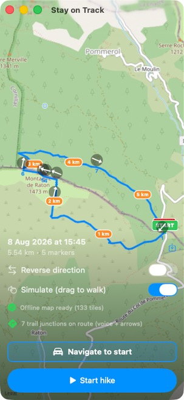

What it is
You load a planned hike as a GPX file, and Stay on Track guides you along it. Its focus is the moment you actually get lost — a decision point, where another path branches off and you confidently walk down the wrong one. As you approach a real trail junction, a posh British voice simply says “Left”, “Right” or “Straight” — how to stay on your intended path. If you drift off the trail, a Geiger-counter-style tone rises in pitch the further you stray, so you can course-correct without looking at the screen.
Everything needed for the hike — map tiles, the trail network, elevation — is downloaded once when you import the route. After that the app is fully offline: put the phone in airplane mode for all-day battery.

Features
- Junction guidance. Decision points come from the OpenStreetMap trail network (nodes where three or more trails meet), matched to your route. Each is called out by voice (“Left / Right / Straight”, a high-quality offline voice), shown as an arrow on the map, and previewed in a top banner with a live distance countdown.
- Off-trail alert. Silent within 100 m of the route; beyond that, a continuous tone whose pitch rises with distance.
- Offline OpenStreetMap maps. A corridor around the route is downloaded and disk-cached at import, so the map works with no signal.
- Live stats & ETA. Distance walked, elevation gained, elapsed time, and two ETAs — a grade-adjusted estimate (Tobler’s hiking function) and one from your measured pace.
- Record & export. Records your actual track and exports it as GPX.
- Navigate to start. Hands the trailhead to Apple Maps, Google Maps, Waze, or the share sheet, to drive there.
- Lock-Screen Live Activity on iPhone, showing the next junction and distance.
- Reverse the route, a green START / red STOP marker, a faint breadcrumb of where you’ve walked, and auto-recentre as you move.
How it’s built
SwiftUI with MapKit (a custom offline OpenStreetMap tile layer), CoreLocation and AVFoundation. Trail junctions are queried from the Overpass API; elevation, when a GPX lacks it, comes from Open-Meteo; the spoken clips are pre-rendered with Kokoro and bundled so the app stays offline. Built for iPhone, with a Mac Catalyst build used for development.
Attribution
Map tiles and trail data © OpenStreetMap contributors; elevation from Open-Meteo (Copernicus DEM); voice from Kokoro-82M (Apache-2.0).
Repository
Source and build instructions: github.com/johnbuckman/stayontrack. Licensed under the GNU General Public License v3.0.